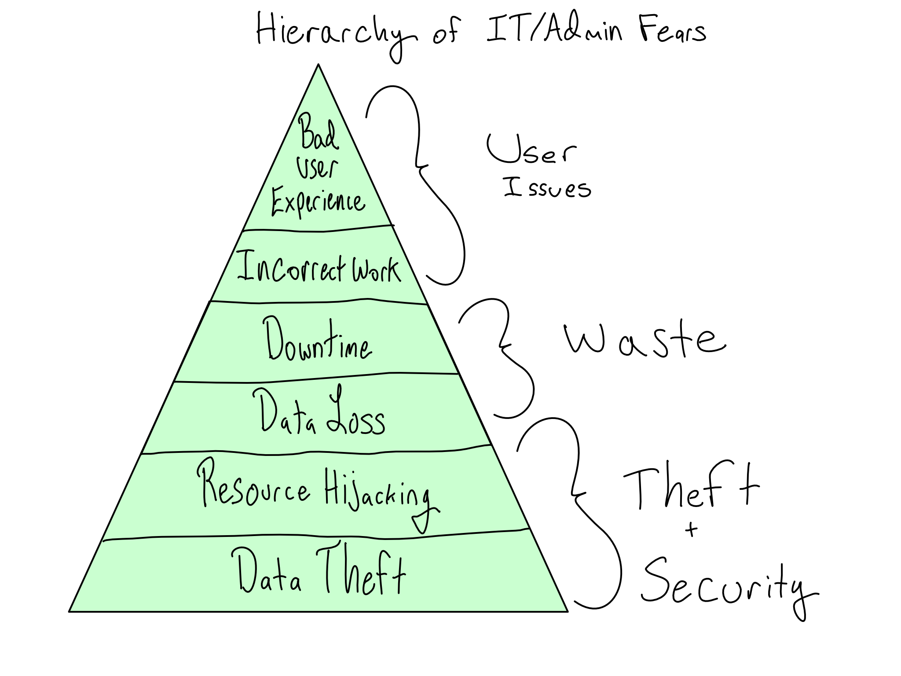

Enterprise-grade data science
Most data scientists aren’t allowed to just stand up servers at their whim. Many organizations operate at a scale or with security and process requirements that mean that professional IT/Admins manage their servers.
I’m going to refer to these larger, more mature organizations as enterprise. If you work at an enterprise, and need a server, your IT/Admins can be great partners or infuriating gatekeepers.
When the partnership works well, having professional IT/Admins is a great collaboration. You get to focus on doing data science, while the IT/Admin creates a great environment where you can work. But even in the best cases, you’re working with people on a different team, with a different understanding of what the work is, and different concerns and priorities.
This section of the book is designed to help you understand the point of view of IT/Admins in an enterprise. I hope by the end of the next few chapters, you understand why they’re not just letting you set up servers, understand the tools they have at their disposal, and are prepared to clearly articulate what you need from them.
Creating a DevOps culture
As a data scientist, your primary concern about your data science environment is that it’s useful. You want the latest versions of Python or R, abundant access to packages, and data right at your fingertips.
Great IT/Admin teams also care about the usefulness of the system to users (that’s you), but it’s usually a distant third to their primary concerns of security and stability. And there’s a benefit to you from that. You may be primarily focused on getting stuff done minute-to-minute, but an insecure or unstable data science platform is not useful.
There’s a reason why these concerns primarily arise in an enterprise context. If you’re a team of three data scientists who sit next to each other, someone crashing your workbench server is probably a fun chance to drink some coffee and learn something new about how servers work.
But if you’re working on an enterprise-grade data science workbench, it’s really frustrating if someone three teams over can disturb your work. And you definitely don’t want to work in an environment where you constantly have to be thinking about security risks.
Balancing security, stability, and usefulness is always about tradeoffs. After all, the most secure and stable computing environment is the one that doesn’t exist at all. Organizations that do DevOps right embrace this tension and are constantly figuring out the right stance for the organization as a whole.
It is an unfortunate truth that many IT/Admin organizations don’t act as partners. They act as gatekeepers to the resources you need to do your job, which can be incredibly frustrating. That means you’ll have to figure out how to communicate with those teams, understand what matters to them, help them understand what matters to you, and reach minimally acceptable organizational outcomes.
A hierarchy of IT/Admin concerns
The primary concerns of IT/Admins are security and stability. A system that is secure and stable gives valid users access to the systems they need to get work done and doesn’t give access to people who shouldn’t have access. If you understand and communicate with IT/Admins about the risks they perceive, it can help generate buy-in from them that you’re taking their concerns seriously.
The worst outcome for a supposedly secure data science platform would be for an unauthorized person to gain access to and steal data. In the most extreme form, this is someone completely outside the organization (outsider threat). But it also could be someone inside the organization who is disgruntled, seeking personal gain, or just careless (insider threat). A related risk is someone hijacking systems that don’t contain sensitive data and appropriating your organization’s computational resources for nefarious ends like crypto mining or virtual DDOS attacks on Turkish banks.1
Somewhat less concerning, but still the stuff of IT/Admin nightmares is platform instability that results in the erasure of important data, called data loss. And even if data isn’t permanently lost, instability that results in lost time for platform users is also bad.
Depending on the context, IT/Admins may have some stake in ensuring that they don’t allow in software that results in bad or incorrect work. And last, way down the list, is that the users don’t have a bad experience using the environment.

Enterprise tools and techniques
Conceptually, enterprise IT/Admins are always trying to implement security in layers. This means that an application or server has multiple different kinds of security in place, making it harder for an accident or breach to occur.
At every layer, sophisticated organizations are trying to implement the principle of least privilege. The idea is that they are trying to keep systems safe and stable by giving people the permissions they need to get their work done – and no more. For example, while you might want to have root access on your data science workbench, you are almost certainly not getting it if you work in an enterprise context, because you don’t really need it.
There is no one-size-fits-all (or even most) way to implement these things. Depending on the relative value of keeping information tightly controlled or more broadly available at your organization, you may have different solutions in place.
One big question any enterprise IT/Admin faces when creating a data science environment is whether to buy something or build it. Some IT/Admin organizations prefer to build data science platforms straight from open-source tools like JupyterHub and RStudio Server on a handful of VMs or in Kubernetes. Others prefer to buy a whole solution from a vendor.
In my experience, enterprises with extraordinarily competent IT/Admin teams can be better off building, but they are extremely rare. Most organizations that try to build their own environments from scratch end up with major pain points that would be solved by purchasing a solution.
I am obviously biased on this front, working for a company that sells this software, but I have seen many organizations decide to build something and decline to buy Posit’s Pro Products, only to come back 6 or 12 months later having discovered that DIY-ing an enterprise-ready data science environment from open-source components is hard.
The most blunt tool an IT/Admin team has to keep bad actors out is networking. If the network is secure, it’s hard for bad actors to infiltrate and hard for insiders to accidentally or intentionally exfiltrate valuable data. That’s why Chapter 15 is about how enterprises approach networking to create highly secure environments.
If you work in a small organization, it’s likely that everyone in the organization has access to nearly everything. As the organization gets larger or security concerns rise, making sure that people have access to the systems they need – and only the systems they need – becomes a higher priority and sophisticated approaches are needed to keep the solutions manageable. In Chapter 16, you’ll learn the basics of how sophisticated organizations think about providing a way to log in to different systems and how you can make use of those tools.
If the environment is secure, concerns turn to how to make sure it has sufficient horsepower to support the users that need it, and how to make sure that upgrades and other changes to the environment can be done smoothly. That’s why Chapter 17 is all about how enterprises manage computational resources to ensure stability, especially when a lot of them are needed.
Lastly, there are your concerns as a data scientist. In particular, using open-source R and Python packages can be complicated in an enterprise context. That’s why Chapter 18 is all about the difficulties I’ve observed for organizations using open-source packages and the solutions I’ve seen work for those environments.
My hope is that by the time you’ve finished these chapters, you’ll be in great shape to articulate exactly the needs for your enterprise data science environment and to be a great partner to IT/Admin when issues, tension, or problems arise.
(No) labs in this section
As this section is all about developing mental models and language to have great collaboration with IT/Admins, there are no labs in this section of the book. There are a lot of pictures and comprehension questions to make sure you’ve really grasped the material.
Yes, both things I’ve actually seen happen.↩︎